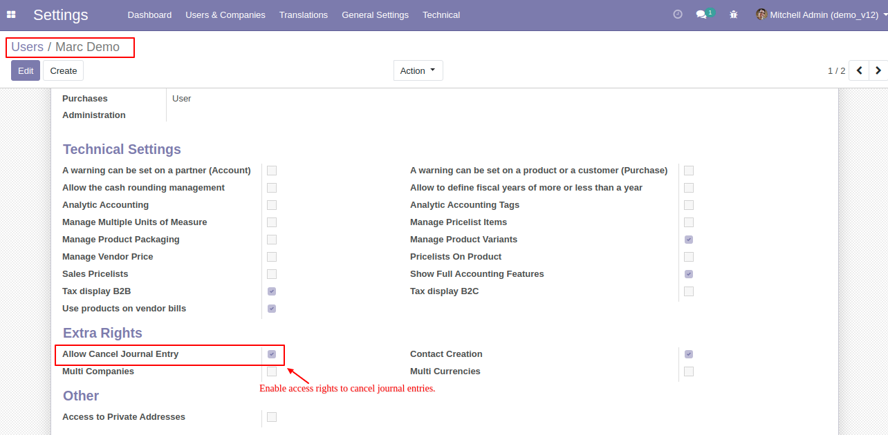
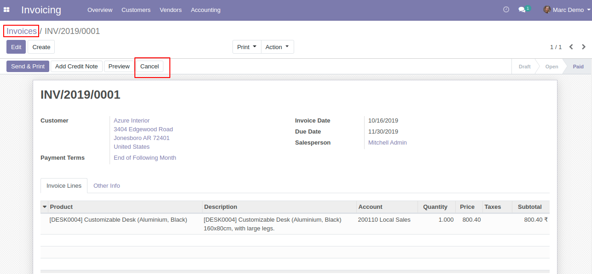
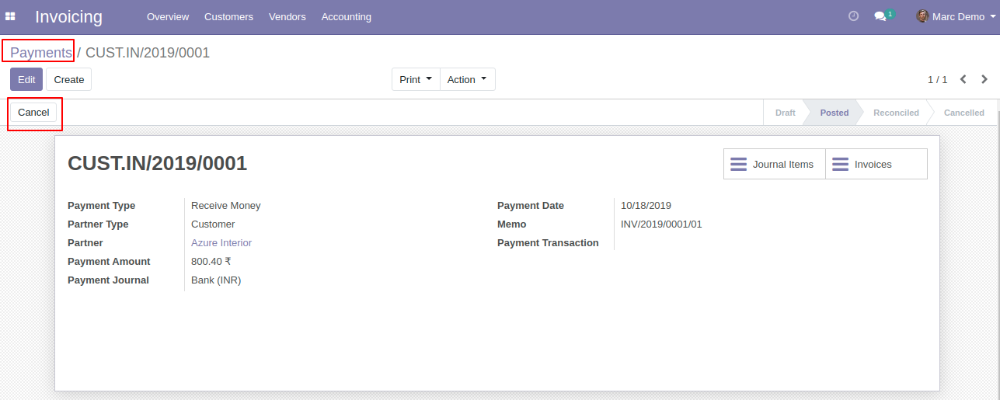
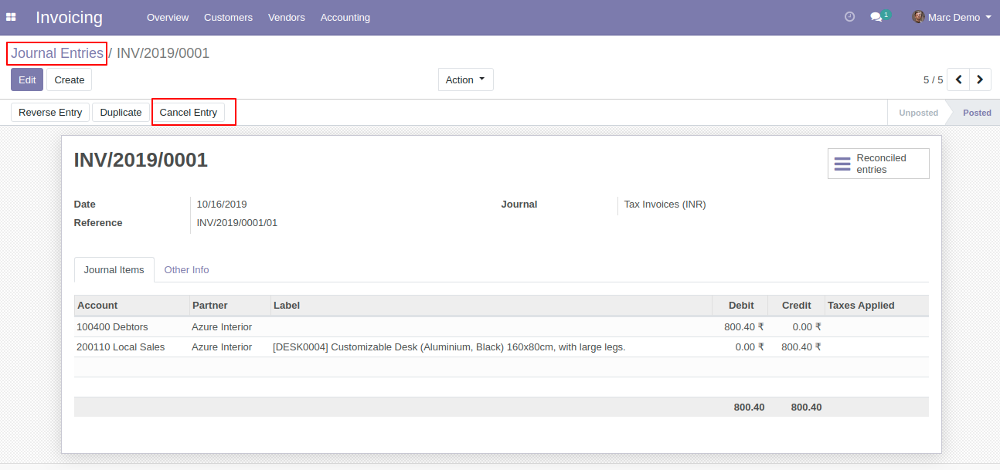

Allows user to Cancel Journal entries, Invoices/Bills and Payments based on users access rights.
User Wise Configuration.
Overview
Go to Menu Settings > Users, open Users form view. As per below image you can allow the user to cancel Invoices, Payments and Journal Entries.

If user has cancellation access rights, then user can see the cancel button on Invoice form view as per below image. Also this same things for Vendor bills, Customer/Vendor Credit Notes.

As per below image user can see cancel button on Customer payments form view and same for Vendor payments if user has cancellation access.

As per below image user can see cancel button on Journal entries form view if user has cancellation access.

Contact us for Support, Customization, Implementation
You will get 45 Days free support in case of Bugs/Issue exclude data recovery.